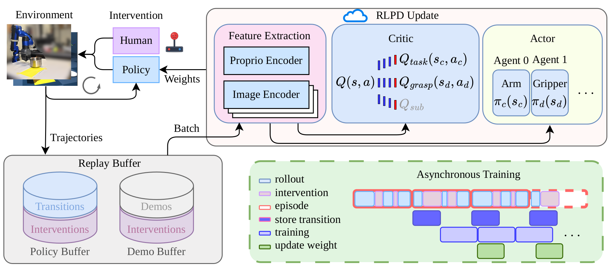

Human-guided online RL
RLPD mixes autonomous experience, demonstrations, and corrective human interventions to support policy initialization and efficient online learning.
Real-world reinforcement learning for robot manipulation
A human-in-the-loop framework that combines CTDE and Hybrid Reward Architecture to learn continuous arm motion and discrete gripper control directly on physical robots.
Decentralized execution
Centralized training
Hybrid reward architecture
Method overview. Two specialized actor-agents execute independently, while a centralized multi-head critic coordinates training.
Abstract
Real-world online reinforcement learning trains manipulation policies directly in the physical world, bypassing the sim-to-real gap and enabling interactive improvement through human intervention. Existing approaches, however, are often limited to small randomization ranges and become unstable when continuous arm control and discrete gripper control are learned jointly. We integrate centralized training with decentralized execution (CTDE) and Hybrid Reward Architecture (HRA), decoupling Cartesian motion and gripper control into two actors that share a centralized multi-head critic. The critic separates sparse task reward from potential-based grasp reward, while decomposed Q-values reformulate the actor objectives. Experiments on two robotic arms show improved sample efficiency and policy performance across large-randomization tennis-ball, banana, and pot manipulation tasks.
Method
Human-guided online experience, hybrid-action CTDE, and reward decomposition work together to stabilize and accelerate learning.
RLPD mixes autonomous experience, demonstrations, and corrective human interventions to support policy initialization and efficient online learning.
A continuous SAC actor controls 6-DoF Cartesian motion and a discrete SAC actor selects open, close, or stay. A shared centralized critic mitigates multi-agent non-stationarity.
HRA splits value estimation into task and grasp Q-value heads. The decomposed values reshape both actor objectives, improving sample efficiency and convergence under noisy RGB observations.

Results
The proposed method outperforms HIL-SERL across large-randomization manipulation tasks on two robotic arms.
Evaluation success
Tennis-ball success improves from 60% to 80%, banana success from 60% to 90%, and pot reset from 0% to 55%. Each result is measured over 20 evaluation episodes after real-world training. We report absolute per-task improvements because task difficulties differ.
Videos
Evaluation comparisons are shown first, followed by the complete set of training rollouts. Playback speed appears on each video.
Evaluation
Side-by-side evaluation rollouts compare HIL-SERL with HiL-HySAC under the same task settings.
50 × 40 cm workspace
30 × 30 cm workspace
40 × 40 cm workspace
Training
Accelerated rollouts show the behavior of the baseline and HiL-HySAC policies during real-world online training.
Training progression
Training progression
Resources
Publication and citation details for this project.
Citation